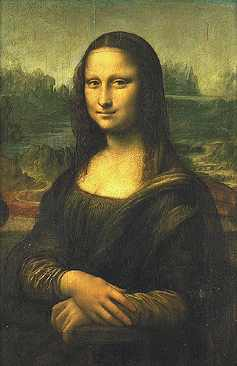

Leonardo di ser Piero da Vinci, llamado Leonard da Vinci
1452-1519
Retrato de Monna Lisa (1479- antes de 1550) llamada la Gioconda
1503-1506
Tabla A 77 cm; L 53 cm
INV 779
Si la identificación de Vasari es exacta, el retrato que Leonardo trae a Francia y que fue adquirido por Francisco I, representa a Monna Lisa, esposa desde 1495 de Francesco di Bartolomeo di Zanoli del Giocondo. El nombre de este notable florentino sería entonces el origen de la apelación que se ha dado a este célebre cuadro. Pero "gioconda" designa también en italiano a la mujer alegre, la mujer agradable. El retrato, que tuvo gran influencia en la pintura italiana, tiene el valor del tipo ideal. La sonrisa que da vida a la Gioconda está representada en numerosos cuadros de Leonardo. A veces se concluye que la obra tuvo una larga maduración, comenzada en Florencia en 1503-1506 y acabada durante las peregrinaciones de Leonardo a Milán o a Roma.
ATRAS